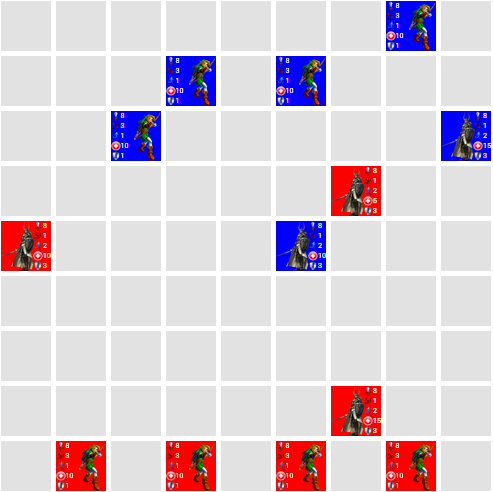

Welcome to Battle Game
A game is "open" when it has just been created and no users have joined it (except the creator)
A game is "full" when a user has joined it, and the creator has not yet started the game
A game is "in-progress" if it has been started by the creator and no one has won yet
A game is "finished" when one of the players has won
